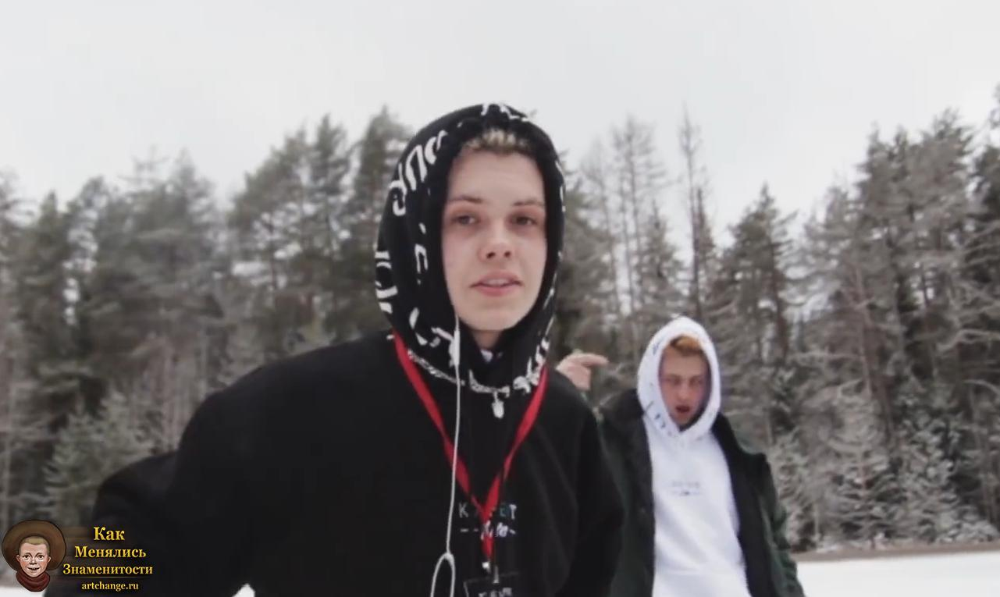

Все еще задаетесь вопросом, на что Мясной рулет не пошел бы ради любви? Тогда прочитайте текст
Джизус
Трек "Warlord" вышел буквально 16 часов назад, релиз ждалт 3 месяца. Этот трек подготовка к альбому, все в ожтдании албюома и в добавку к этому треку вышел клип.
Скачать можно здесь))
Лизер
Лизер уже год как выпускает синглы, фанатам кажется, что эти треки войдут в альбом "Молодость ч.2", желаем Арсену успехов
Скачать трек "Простым" здесь))
Джизус
Трек "Фемида" вышел ровно год назад, совместный трек Джизуса с Иглой охватил большое колтчество прослушиваний в Спотифае
Скачать этот трек...
Джизус (настоящее имя — Кожихов Владислав Дмитриевич; род. 12 июня, 1997, Киров) — российский рок исполнитель. Один из основателей творческого объединения КОННЕКТ. Музыкальную деятельность в сети начинал с записи «кавeров», под псевдонимом VLVD БЕЛЫЙ. Владислав родился в городе Киров, Россия. Музыкой увлекся ещё в детстве, точнее, будучи подростком. В 2014 году Влад создает личный Youtube-канал и начинает выкладывать песни, исполненные им под гитарный аккомпанемент. Спустя год, юноша начинает сам сочинять музыкальные композиции и загружать их в сеть.
Начало карьеры
В 2015 году парень меняет направление и начинает исполнять «олдскульный», «подъездный» рэп, надеясь на популярность. Однако новые треки, исполняемые в новом стиле, желаемой известности молодому человеку не принесли.

«JESUS», «Возрождение» и «TEEN SOUL»
2016 год становится снова переломным моментом жизни Влада, когда певец вновь решается на кардинальные перемены музыкального стиля. В 2017 г. Влад выпускает свой дебютный релиз с названием «Возрождение», в состав которого вошло 19 свежих треков про любовь, наркотики, личные переживания. Далее выходит альбом под названием «TEEN SOUL», релиз которого состоялся 9 ноября того же года. В который вошло 7 треков. После вышли одноимённые альбомы: «JESUS», «JESUS 2»
Популярность и уход из «КОННЕКТ»
Парень продолжал работать и ежемесячно выпускал новые треки. Новый апрельский релиз 2018, именуемый «G-Unit», позволил начинающему артисту увеличить количество фанов в несколько раз. Спустя время, молодой парень попадает в психиатрическую лечебницу с диагнозом депрессивный психоз, где находится около 3 месяцев. Осенью 2018 выходит релиз, посвященный данному инциденту жизни Джизуса, под названием «Психоневрологические заболевания с видимостью невидимых существ». В 2019 году выходит релиз «Нога в ногу с этой страной». 19 октября того же года, появляется информация от УГАДАЙКТО, основателя творческого объединения «КОННЕКТ», о том что Джизус покидает его. Позже УГАДАЙКТО пишет в своей истории в Instagram что Джизус вернулся в «КОННЕКТ»